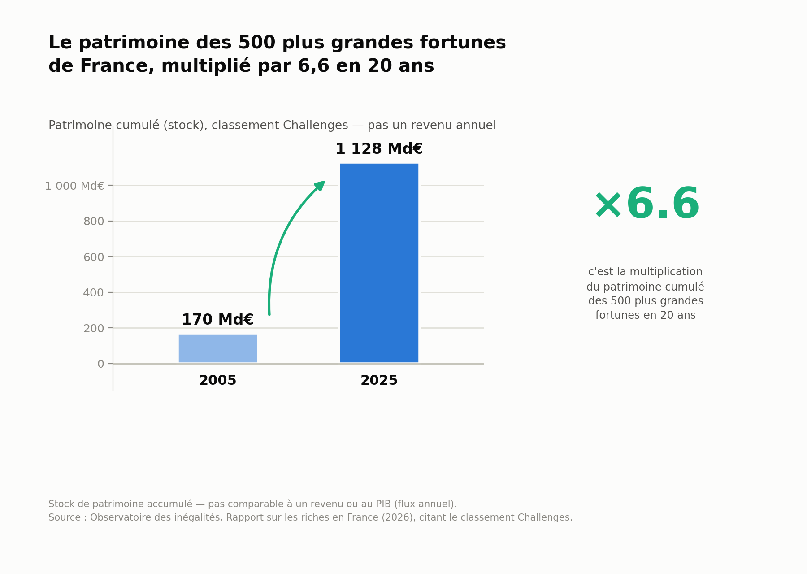
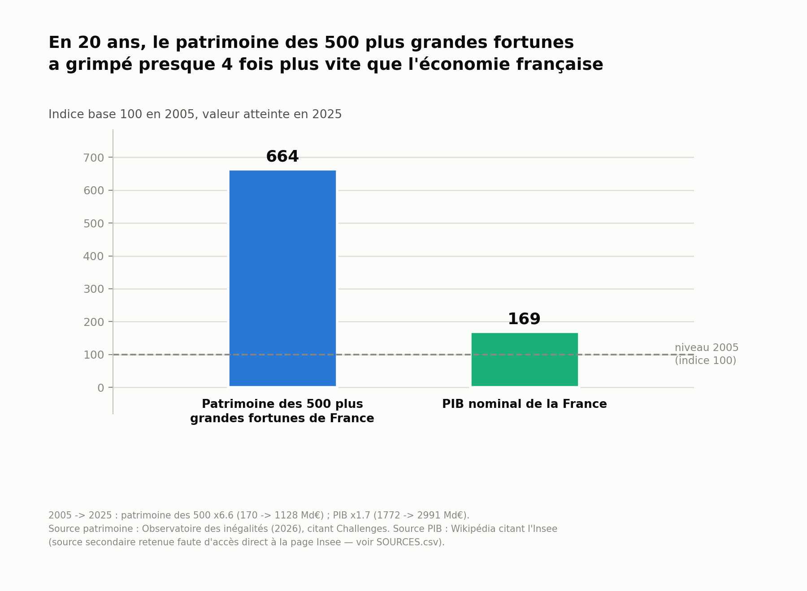
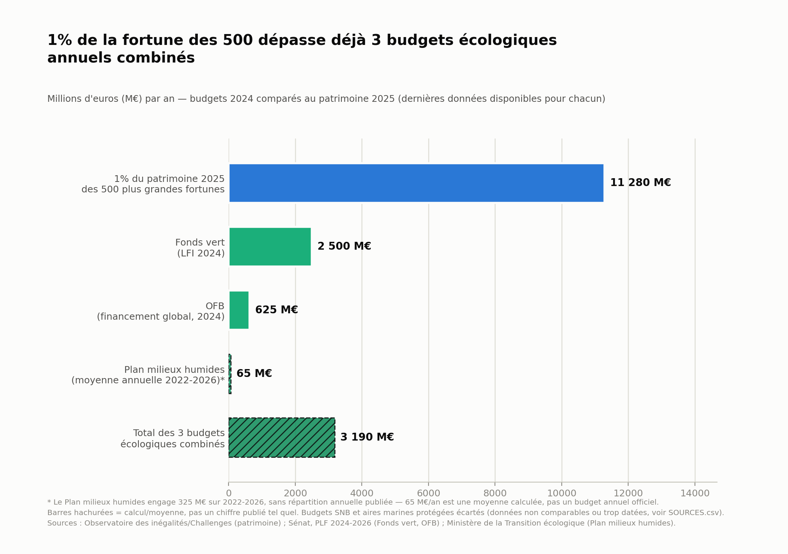

Les 500 plus grandes fortunes de France, 2005-2025
Données 2005-2025
Le magazine Challenges publie chaque année un classement des 500 plus grandes fortunes de France. L'Observatoire des inégalités en tire une série longue du patrimoine cumulé de ce groupe. Cette page compare cette évolution à deux autres grandeurs : le PIB français, et le budget annuel de l'État consacré à l'écologie.
Le patrimoine cumulé des 500 plus grandes fortunes de France est passé de 170 milliards d'euros en 2005 à 1128 milliards d'euros en 2025.

Source : Observatoire des inégalités, Rapport sur les riches en France (2026), citant le classement Challenges
Sur la même période (2005-2025), le PIB nominal français est passé de 1772 à 2991 milliards d'euros.

Source patrimoine : Observatoire des inégalités (2026), citant Challenges. Source PIB : Wikipédia citant l'Insee (source secondaire, page Insee primaire non accessible directement)
1 % du patrimoine 2025 des 500 plus grandes fortunes représente 11 280 M€. Trois budgets écologiques annuels combinés (Fonds vert, OFB, Plan milieux humides) représentent 3190 M€.

Sources : Observatoire des inégalités/Challenges (patrimoine) ; Sénat, PLF 2024-2026 (Fonds vert, OFB) ; Ministère de la Transition écologique (Plan milieux humides)